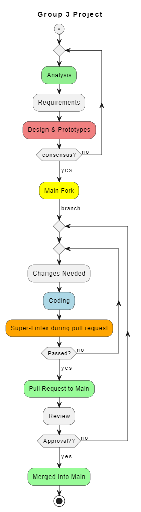

Each team member is responsible for contributing to the project using any
Git/Github
environment and local development workflow they are most comfortable with.
Submitting Changes
We submit changes by:
creating a branch,
commiting and staging changes,
sending a pull request,
having a team member approve changes and merge changes.
Testing
We have a SuperLinter setup that will catch some code issues. Any bug that is caught here should be fixed before
merging into main. Bugs found in main will be posted on the Bug Reports Board under Projects. Testing your code
after an edit is a process that should be performed locally throughout development.
Bug Reports
Bugs are tracked here: Bug Board This is how we make sure the team is aware of features that are missing or
where the code needs a little work. All team members are resposible for posting and updating the board when an
item needs to be closed.
Code of Conduct
Best Practice is to have a team member review your changes and pull requests and approve by merging the code
into main. If a team member finds a bug when reviewing code, post it to the bug board and notify the author.
Only merge clean code.
